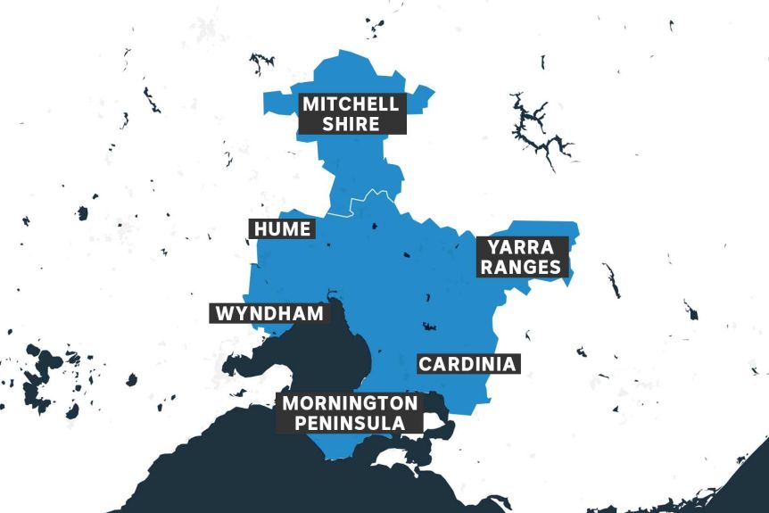
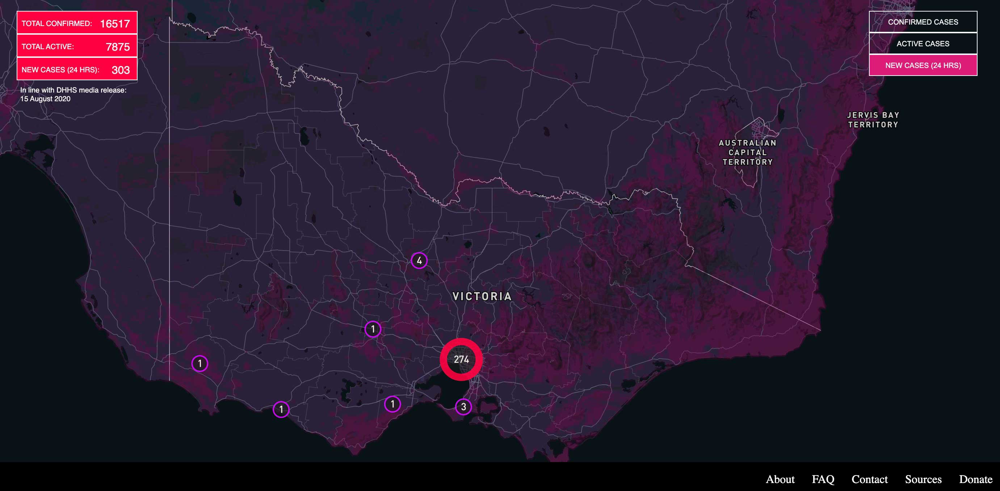
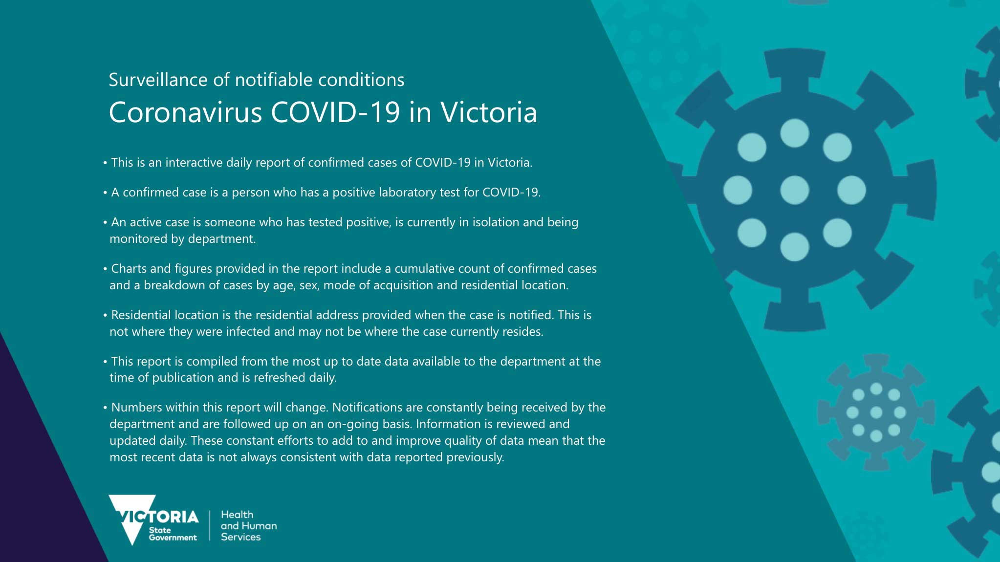
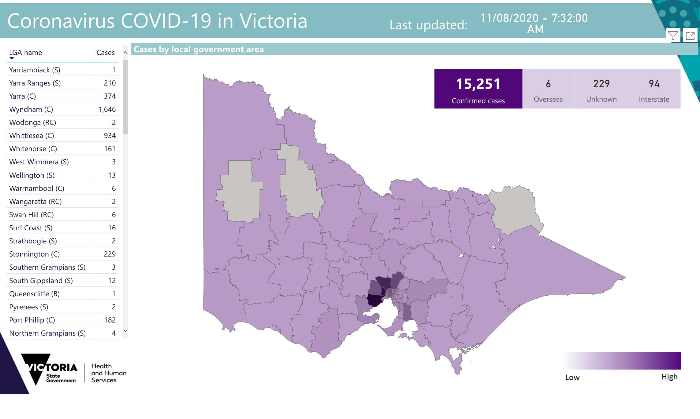
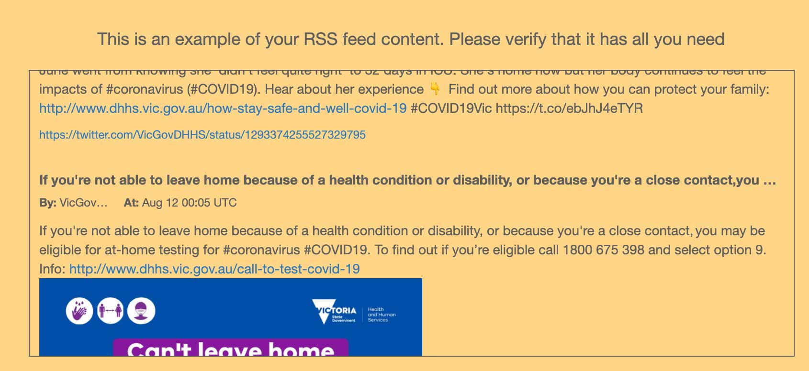
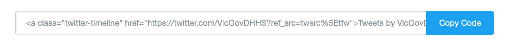
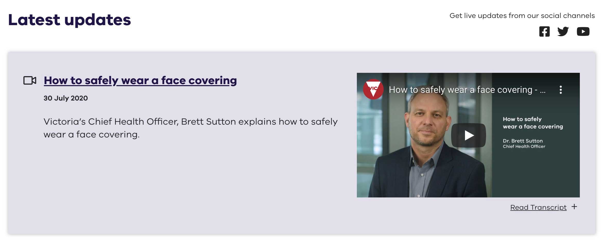
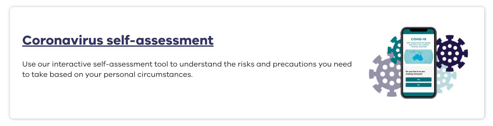

Alpha Builders
Assignment Part 1
1.
The "What" Section
Project Name: vicovid19 Data

The Alpha Builders would like to construct a website that contains COVID-19 Data from the following areas; Mitchell Shire, Hume, Yarra Ranges, Wyndham, Cardinia and the Morning Peninsula. Image taken from https://www.abc.net.au/news/2020-07-07/metropolitan-melbourne-suburbs-back-in-coronavirus-lockdown/12431564

These areas are in Victoria and the idea for the website is to have very quick, user friendly and informative information for people to help minimise COVID-19 for themselves and others around them in their local community. The website will be designed as a tool for people to use as a resource to get current data of COVID-19. Daily data from Melbourne and surrounding suburbs can be shown. COVID-19 new cases, current cases, deaths, recoveries and people in Intensive Care.
We can get data from this website (either dynamically or we can construct our own database for this exercise). https://www.covid19data.com.au/
This website has national and Victorian categories. We can compare data on a national and state level looking at:
- Confirmed cases today
- Confirmed cases yesterday
- Recoveries
- Deaths
This information can be captured in several ways. We can have a small summary of data available at the top of the screen or window. This information can be shown in graph form and this would either be on its own page of corresponding data or be placed further down on the home page. This can evolve through more developing the content of the site as a group. Here is a link on embedding interactive COVID-19 maps, but may not be as local as the website requires.
The main reason the graphically represented data should be posted on its own page or further down the home page is because the initial idea of the website was to have an interactive map of Victoria or zoomed in suburbs within Victoria which would show COVID-19 data for specific postcodes. The initial idea was setup like this as a user in COVID-19 affected areas could type in their postcode to get a quick, visual representation of the cases of COVID-19 in their suburbs and also surrounding suburbs. This idea was proposed so that relevant information can be gathered quickly by the user. When researching this idea further, a similar website created by a Melbourne University Student Hassan Andrabi https://twitter.com/hrs_andrabi. This is the website https://covidvictoria.com/
So, after a user inputs their postcode, a map will generate COVID-19 cases in that area and surrounding area. If we can have a 2.5 - 5km radius surrounding the post code, then the user could see how their immediate area has been affected. When researching further into COVID-19 maps showing data by post code, this was found on online https://powerbi.com/
This links to the https://www.dhhs.vic.gov.au/coronavirus website.
It shows an interactive map of COVID-19 cases through the input of postcodes. It highlights the suburb but does not give a visual representation on the map of how many COVID-19 cases there are in that area.
Other aspects of the website are to have a COVID-19 news feed on the page. This would either be at the top of the page, or down the side of the page, maybe on the right-hand side of the website. News feeds can come from existing RSS feeds. As the website is about data for Victorian suburbs, the data needs to have a reasonable amount of local data but understands that there will be lots of COVID-19 data available on a national level. This website describes how local twitter accounts are an excellent source for local news feeds - here is one from VicGovDHHS https://twitter.com/VicGovDHHS
This will give the website relevant local data. This is an example of how an RSS feed looks like from using a generater from https://fetchrss.com - and another website example is https://rss.bloople.net/
Go to https://publish.twitter.com/. We can set up news feeds from twitter directly from the VicGovDHHS twitter account. We can make the twitter feed any size we want and can have light or dark theme. Here is the code:
 Tweets by VicGovDHHSThe website will have a FAQ section which will be linked to government websites to ensure that information that is provided through the website is accurate and has been approved by Victorian government.
The website will also contain a chatbot. Here is a site for reference on how to build a chatbot https://medium.com/analytics-vidhya/building-a-simple-chatbot-in-python-using-nltk-7c8c8215ac6e and https://blog.datasciencedojo.com/building-an-ai-based-chatbot-in-python/
Both these links talk about creating a chatbot with python, so we should be able to make something, even if it is in a simplified format.
COVID-19 Tips for staying negative - https://www.dhhs.vic.gov.au/face-masks-and-coverings-covid-19
 COVID-19 Things you should do if you are tested positive. - https://www.dhhs.vic.gov.au/self-quarantine-coronavirus-covid-19


 As a student, I want to know if there are any infection cases near my campus, so that I can consider whether to apply for online classes - Photo by
As a student, I want to know if there are any infection cases near my campus, so that I can consider whether to apply for online classes - Photo by  As a tourist, I can check the number of people infected every day, so that I can choose to return to my country when the epidemic is relieved - Photo by
As a tourist, I can check the number of people infected every day, so that I can choose to return to my country when the epidemic is relieved - Photo by  As a parent, I want to know where the COVID hotspots are, in order to avoid those areas when taking my children out for exercise
- Photo by
As a parent, I want to know where the COVID hotspots are, in order to avoid those areas when taking my children out for exercise
- Photo by  As a retired woman, I want to know how many cases are in my suburb so that I can consider doing my own shopping or getting it done online
- Photo by
As a retired woman, I want to know how many cases are in my suburb so that I can consider doing my own shopping or getting it done online
- Photo by